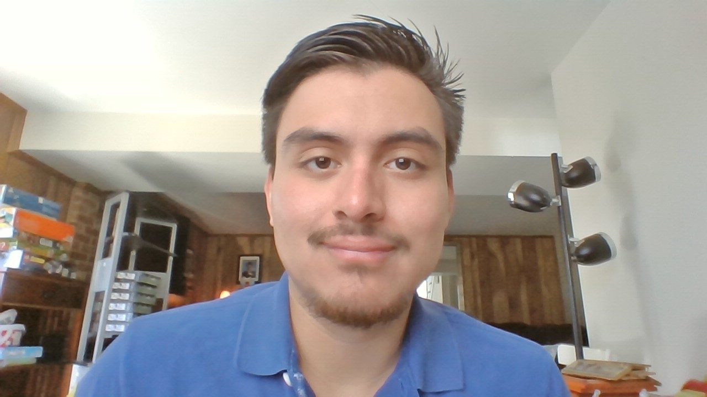

About Me
Daniel Soberanis-Chacon is a game programmer who works with Robert Dietrich to be a build manager for a game in our Advanced Game Design Studio class at George Mason University. Daniel knows how to program using C# and python. He loves to program because multiple solutions can work in programming certain functions in a game. If one method doesn’t work the way he was hoping, he will try a different method. Daniel will be working for MGTA as an instructor for Python AI and Machine Learning for his summer internship.
Resume/Contact
PDF link
Daniel Soberanis-Chacon
5704 Sailstone ln, Woodbridge, VA, 22193
(571)285-7482
dasoberan@gmail.com
Summary
Experienced game programmer seeking a position to work in a suitable environment to provide well-designed games. I have 4 years of experience with programming using multiple languages and multiple game engines. When programming, my primary focus is making the game innovative, functional, user-friendly, and most importantly fun.
Skills
- Experienced in multiple languages such as C#, C++, and Python.
- Experienced in multiple game engines such as Unity and Unreal.
- Communication among the programming team.
- Innovative with the methods to get a function to work great.
- Easily motivated to get the job done on time.
Experience
Build Manager January 2020-May 2020
Starbomb Showdown
- Responsible for creating a working build of the game.
- Play testing for any bugs that need to be fixed.
- Provide extra help in programming such as programming a timer function and falling death blocks.
Teacher Assistant June 2020-August 2020
Mason Game & Technology Academy (MGTA)
- Responsible for understanding the course material for both an intro and advance python course
- Assist students with a python program they struggle with.
- Run and test other students’ python program.
Education
- George Mason University Fairfax, Virginia Computer Game Design BFA August 2017-May 2021